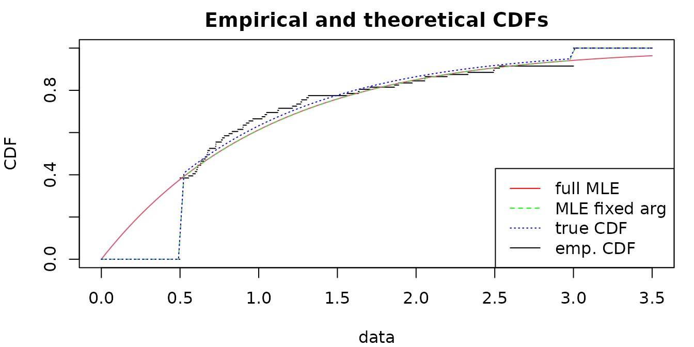
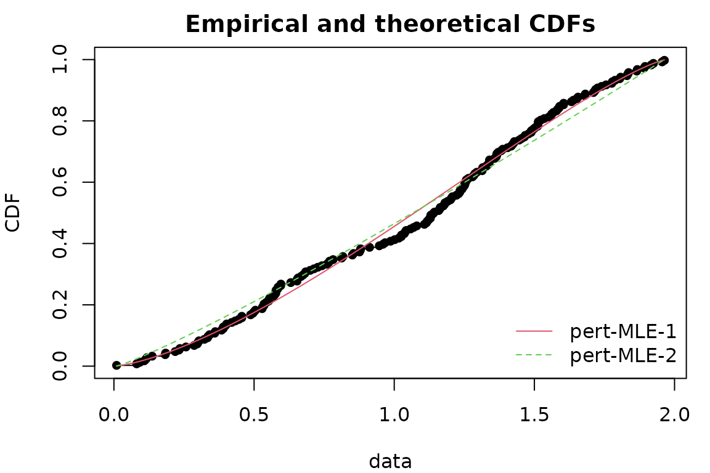
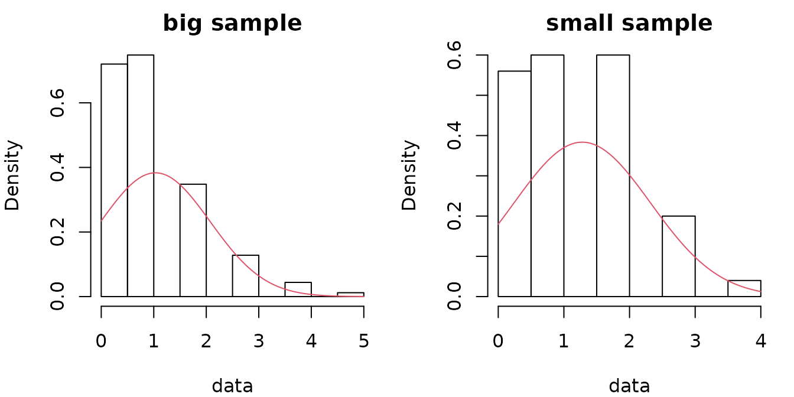
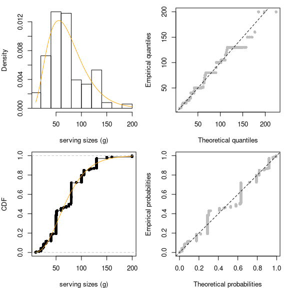
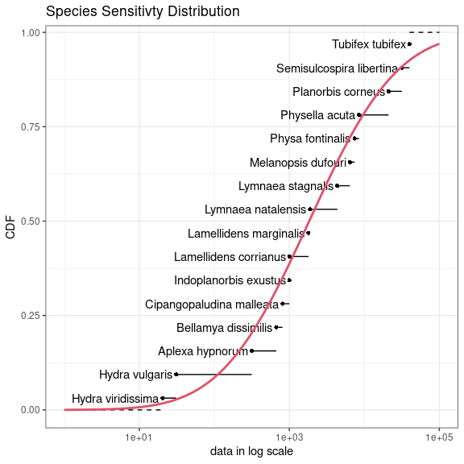
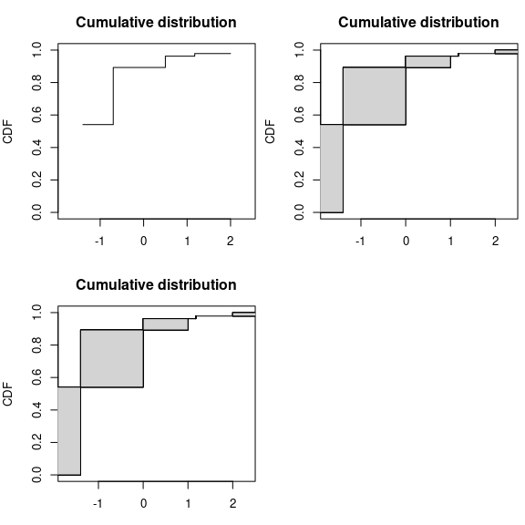
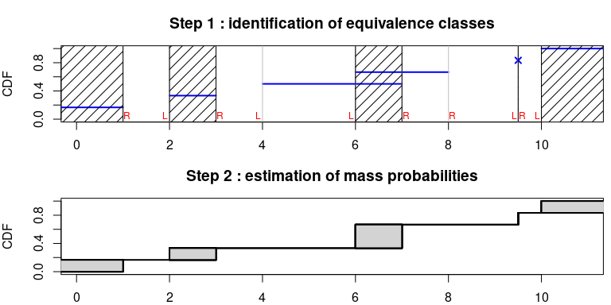

Frequently Asked Questions
Marie Laure Delignette Muller, Christophe Dutang
2023-04-25
Source:vignettes/FAQ.Rmd
FAQ.Rmd1 Questions regarding distributions
1.1 How do I know the root name of a distribution?
The root name of a probability distribution is the name which is used the d, p, q, r functions. For base R distributions, the root names are given in R-intro : https://cran.r-project.org/doc/manuals/R-intro.html#Probability-distributions.
For example, you must use "pois" for the Poisson distribution and not "poisson".
1.2 How do I find “non standard” distributions?
For non-standard distributions, you can either find a package implementing them or define by yourself. A comprehensive list of non-standard distributions is given in the Distributions task view https://CRAN.R-project.org/view=Distributions. Here are some two examples of user-defined distributions. A third example (shifted exponential) is given in FAQ 3.5.4.
- The Gumbel distribution
dgumbel <- function(x, a, b) 1/b*exp((a-x)/b)*exp(-exp((a-x)/b))
pgumbel <- function(q, a, b) exp(-exp((a-q)/b))
qgumbel <- function(p, a, b) a-b*log(-log(p))
data(groundbeef)
fitgumbel <- fitdist(groundbeef$serving, "gumbel", start=list(a=10, b=10))- The zero-modified geometric distribution
dzmgeom <- function(x, p1, p2) p1 * (x == 0) + (1-p1)*dgeom(x-1, p2)
pzmgeom <- function(q, p1, p2) p1 * (q >= 0) + (1-p1)*pgeom(q-1, p2)
rzmgeom <- function(n, p1, p2)
{
u <- rbinom(n, 1, 1-p1) #prob to get zero is p1
u[u != 0] <- rgeom(sum(u != 0), p2)+1
u
}
x2 <- rzmgeom(1000, 1/2, 1/10)
fitdist(x2, "zmgeom", start=list(p1=1/2, p2=1/2))1.3 How do I set (or find) initial values for non standard distributions?
As documented, we provide initial values for the following distributions:
"norm", "lnorm", "exp", "pois", "cauchy", "gamma“, "logis", "nbinom", "geom", "beta", "weibull" from the stats package; "invgamma", "llogis", "invweibull", "pareto1", "pareto",
"lgamma", "trgamma", "invtrgamma" from the actuar package.
Look first at statistics and probability books such as
- different volumes of N. L. Johnson, S. Kotz and N. Balakrishnan books, e.g. Continuous Univariate Distributions, Vol. 1,
-
Thesaurus of univariate discrete probability distributions by G. Wimmer and G. Altmann.
-
Statistical Distributions by M. Evans, N. Hastings, B. Peacock.
- Distributional Analysis with L-moment Statistics using the R Environment for Statistical Computing by W. Asquith.
If not available, find initial values by equalling theoretical and empirical quartiles.
The graphical function plotdist() and plotdistcens() can also be used to assess the suitability of
starting values : by an iterative manual process you can move parameter values so as to
obtain a distribution that roughly fits the data and take these parameter values
as starting values for the real fit.
You may also consider the prefit() function to find initial values especially in case where parameters are
constrained.
1.4 Is it possible to fit a distribution with at least 3 parameters?
Yes, an example with the Burr distribution is detailed in the JSS paper. We reproduce it very quickly here.
data("endosulfan")
library("actuar")
fendo.B <- fitdist(endosulfan$ATV, "burr", start = list(shape1 = 0.3, shape2 = 1, rate = 1))
summary(fendo.B)## Fitting of the distribution ' burr ' by maximum likelihood
## Parameters :
## estimate Std. Error
## shape1 0.206 0.0561
## shape2 1.540 0.3188
## rate 1.497 0.4683
## Loglikelihood: -520 AIC: 1046 BIC: 1054
## Correlation matrix:
## shape1 shape2 rate
## shape1 1.000 -0.900 -0.727
## shape2 -0.900 1.000 0.588
## rate -0.727 0.588 1.0001.5 Why there are differences between MLE and MME for the lognormal distribution?
We recall that the lognormal distribution function is given by \[ F_X(x) = \Phi\left(\frac{\log(x)-\mu}{\sigma} \right), \] where \(\Phi\) denotes the distribution function of the standard normal distribution. We know that \(E(X) = \exp\left( \mu+\frac{1}{2} \sigma^2 \right)\) and \(Var(X) = \exp\left( 2\mu+\sigma^2\right) (e^{\sigma^2} -1)\). The MME is obtained by inverting the previous formulas, whereas the MLE has the following explicit solution \[ \hat\mu_{MLE} = \frac{1}{n}\sum_{i=1}^n \log(x_i),~~ \hat\sigma^2_{MLE} = \frac{1}{n}\sum_{i=1}^n (\log(x_i) - \hat\mu_{MLE})^2. \] Let us fit a sample by MLE and MME. The fit looks particularly good in both cases.
x3 <- rlnorm(1000)
f1 <- fitdist(x3, "lnorm", method="mle")
f2 <- fitdist(x3, "lnorm", method="mme")
par(mfrow=1:2)
cdfcomp(list(f1, f2), do.points=FALSE, xlogscale = TRUE, main = "CDF plot")
denscomp(list(f1, f2), demp=TRUE, main = "Density plot")Let us compare the theoretical moments (mean and variance) given the fitted values (\(\hat\mu,\hat\sigma\)), that is \[ E(X) = \exp\left( \hat\mu+\frac{1}{2} \hat\sigma^2 \right), Var(X) = \exp\left( 2\hat\mu+\hat\sigma^2\right) (e^{\hat\sigma^2} -1). \]
c("E(X) by MME"=as.numeric(exp(f2$estimate["meanlog"]+f2$estimate["sdlog"]^2/2)),
"E(X) by MLE"=as.numeric(exp(f1$estimate["meanlog"]+f1$estimate["sdlog"]^2/2)),
"empirical"=mean(x3))## E(X) by MME E(X) by MLE empirical
## 1.61 1.60 1.61
c("Var(X) by MME"=as.numeric(exp(2*f2$estimate["meanlog"]+f2$estimate["sdlog"]^2) *
(exp(f2$estimate["sdlog"]^2)-1)),
"Var(X) by MLE"=as.numeric(exp(2*f1$estimate["meanlog"]+f1$estimate["sdlog"]^2) *
(exp(f1$estimate["sdlog"]^2)-1)),
"empirical"=var(x3))## Var(X) by MME Var(X) by MLE empirical
## 4.30 4.36 4.30From a MLE point of view, a lognormal sample \(x_1,\dots,x_n\) is equivalent to handle a normal sample \(\log(x_1),\dots,\log(x_n)\). However, it is well know by the Jensen inequality that \(E(X) = E(\exp(\log(X))) \geq \exp(E(\log(X)))\) implying the MME estimates provides better moment estimates than with MLE.
1.6 Can I fit a distribution with positive support when data contains negative values?
The answer is no: you cannot fit a distribution with positive support (say gamma distribution) when data contains negative values.
## Error in computing default starting values.
## Error in manageparam(start.arg = start, fix.arg = fix.arg, obs = data, :
## Error in start.arg.default(obs, distname) :
## values must be positive to fit an exponential distribution## [1] "Error in manageparam(start.arg = start, fix.arg = fix.arg, obs = data, : \n Error in start.arg.default(obs, distname) : \n values must be positive to fit an exponential distribution\n\n"
## attr(,"class")
## [1] "try-error"
## attr(,"condition")
## <simpleError in manageparam(start.arg = start, fix.arg = fix.arg, obs = data, distname = distname): Error in start.arg.default(obs, distname) :
## values must be positive to fit an exponential distribution
## >It is irrelevant to do such fit. If you really need to use that distribution, you have two options: either to remove negative values (not recommended) or to shift the data.
fitdist(x[x >= 0], "exp")## Fitting of the distribution ' exp ' by maximum likelihood
## Parameters:
## estimate Std. Error
## rate 1.06 0.107## Fitting of the distribution ' exp ' by maximum likelihood
## Parameters:
## estimate Std. Error
## rate 0.914 0.09141.7 Can I fit a finite-support distribution when data is outside that support?
The answer is no: you cannot fit a distribution with finite-support (say beta distribution) when data is outside \([0,1]\).
## Error in computing default starting values.
## Error in manageparam(start.arg = start, fix.arg = fix.arg, obs = data, :
## Error in start.arg.default(obs, distname) :
## values must be in [0-1] to fit a beta distribution## [1] "Error in manageparam(start.arg = start, fix.arg = fix.arg, obs = data, : \n Error in start.arg.default(obs, distname) : \n values must be in [0-1] to fit a beta distribution\n\n"
## attr(,"class")
## [1] "try-error"
## attr(,"condition")
## <simpleError in manageparam(start.arg = start, fix.arg = fix.arg, obs = data, distname = distname): Error in start.arg.default(obs, distname) :
## values must be in [0-1] to fit a beta distribution
## >It is irrelevant to do such a fit. If you really need to use that distribution, you have two ways to tackle this issue: either to remove impossible values (not recommended) or to shift/scale the data.
fitdist(x[x > 0 & x < 1], "beta")## Fitting of the distribution ' beta ' by maximum likelihood
## Parameters:
## estimate Std. Error
## shape1 2.08 0.288
## shape2 2.50 0.352## Fitting of the distribution ' beta ' by maximum likelihood
## Parameters:
## estimate Std. Error
## shape1 1.77 0.236
## shape2 2.17 0.2961.8 Can I fit truncated distributions?
The answer is yes: but the fitting procedure must be carried out carefully. Let \(X\) be the original untruncated random variable. The truncated variable is the conditionnal random variable \(Y = X ~\vert~ l< X <u\) with \(l<u\) the lower and upper bounds. The cdf of \(Y\) is \(F_Y(y)=\frac{F_X(x) - F_X(l)}{F_X(u)-F_X(l)}\). There is a density (w.r.t. the Lebesgues measure) given by \[ f_Y(y) = \left\{\begin{array}{ll} \frac{f_X(x)}{F_X(u)-F_X(l)} & \text{if } l < x < u \\ 0 & \text{otherwise }\\ \end{array}\right. \]
dtexp <- function(x, rate, low, upp)
{
PU <- pexp(upp, rate=rate)
PL <- pexp(low, rate=rate)
dexp(x, rate) / (PU-PL) * (x >= low) * (x <= upp)
}
ptexp <- function(q, rate, low, upp)
{
PU <- pexp(upp, rate=rate)
PL <- pexp(low, rate=rate)
(pexp(q, rate)-PL) / (PU-PL) * (q >= low) * (q <= upp) + 1 * (q > upp)
}
n <- 200
x <- rexp(n); x <- x[x > .5 & x < 3]
f1 <- fitdist(x, "texp", method="mle", start=list(rate=3), fix.arg=list(low=min(x), upp=max(x)))
f2 <- fitdist(x, "texp", method="mle", start=list(rate=3), fix.arg=list(low=.5, upp=3))
gofstat(list(f1, f2))## Goodness-of-fit statistics
## 1-mle-texp 2-mle-texp
## Kolmogorov-Smirnov statistic 0.0952 0.084
## Cramer-von Mises statistic 0.1343 0.104
## Anderson-Darling statistic Inf 1.045
##
## Goodness-of-fit criteria
## 1-mle-texp 2-mle-texp
## Akaike's Information Criterion 127 132
## Bayesian Information Criterion 130 135
1.9 Can I fit truncated inflated distributions?
The answer is yes: but the fitting procedure must be carried out carefully. Let \(X\) be the original untruncated random variable. The truncated variable is \(Y = \max(\min(X, u), l)\) with \(l<u\) the lower and upper bounds. The cdf of \(Y\) is \(F_Y(y)=F_X(y)1_{u>y>l} + 1_{y>u}\). There is no density (w.r.t. the Lebesgues measure) since there are two probability masses \(P(Y=l)= P(X\leq l)>0\) and \(P(Y=u)=P(X>u)>0\). However, the density function with respect to the measure \(m(x)= \delta_l(x)+\delta_u(x)+\lambda(x)\) is \[ f_Y(y) = \left\{\begin{array}{ll} F_X(l) & \text{if } y=l \\ f_X(y) & \text{if } l<y<u \\ 1-F_X(u) & \text{if } y=u \\ \end{array}\right. \] Let \(\theta\) be the parameter of the untruncated distribution. Since the likelihood can be factorized, the maximization can be done separately \[ L(l, \theta, u) = 1_{\forall i, l\leq y_i\leq u} \prod_{i=1, y_i=l}^n F_X(l, \theta) \times \prod_{i=1,l<y_i<u}^n f_X(y_i, \theta) \times \prod_{i=1,y_i=u}^n (1-F_X(u, \theta)), \] Furthermore, using \(\forall i, l\leq y_i\leq u\Leftrightarrow l\leq \min_i y_i\leq \max_i y_i\leq u\), the likelihood is zero for \(l>\min_i y_i\) or \(u<\max_i y_i\) and increasing with respect to \(l\) in \(]-\infty, \min_i y_i]\) and decreasing with respect to \(u\) in \([\max_i y_i,+\infty[\). So the maximum of \(L\) is reached at \(l=\min_i y_i\) and \(u=\max_i y_i\). The MLE of \(\theta\) is then obtained by maximizing the log-likelihood \(\log(L(l, \theta, u))\) with \(u=\max_i Y_i\) and \(l=\min_i Y_i\).
Let us illustrate truncated distribution with the truncated exponential distribution. The log-likelihood is particularly bad-shaped.
dtiexp <- function(x, rate, low, upp)
{
PU <- pexp(upp, rate=rate, lower.tail = FALSE)
PL <- pexp(low, rate=rate)
dexp(x, rate) * (x >= low) * (x <= upp) + PL * (x == low) + PU * (x == upp)
}
ptiexp <- function(q, rate, low, upp)
pexp(q, rate) * (q >= low) * (q <= upp) + 1 * (q > upp)
n <- 100; x <- pmax(pmin(rexp(n), 3), .5)
# the loglikelihood has a discontinous point at the solution
par(mar=c(4,4,2,1), mfrow=1:2)
llcurve(x, "tiexp", plot.arg="low", fix.arg = list(rate=2, upp=5), min.arg=0, max.arg=.5, lseq=200)
llcurve(x, "tiexp", plot.arg="upp", fix.arg = list(rate=2, low=0), min.arg=3, max.arg=4, lseq=200)The first method directly maximizes the log-likelihood \(L(l, \theta, u)\); the second method maximizes the log-likelihood \(L(\theta)\) assuming that \(u=\hat u\) and \(l=\hat l\) are known. Inside \([0.5,3]\), the CDF are correctly estimated in both methods but the first method does not succeed to estimate the true value of the bounds \(l,u\).
## Fitting of the distribution ' tiexp ' by maximum likelihood
## Parameters:
## estimate Std. Error
## rate 0.949 NA
## low -0.502 NA
## upp 23.072 NA## Fitting of the distribution ' tiexp ' by maximum likelihood
## Parameters:
## estimate Std. Error
## rate 0.947 0.0982
## Fixed parameters:
## value
## low 0.5
## upp 3.0## Goodness-of-fit statistics
## 1-mle-tiexp 2-mle-tiexp
## Kolmogorov-Smirnov statistic 0.378 0.377
## Cramer-von Mises statistic 1.890 1.882
## Anderson-Darling statistic 10.222 10.193
##
## Goodness-of-fit criteria
## 1-mle-tiexp 2-mle-tiexp
## Akaike's Information Criterion 216 162
## Bayesian Information Criterion 224 165
cdfcomp(list(f1, f2), do.points = FALSE, addlegend=FALSE, xlim=c(0, 3.5))
curve(ptiexp(x, 1, .5, 3), add=TRUE, col="blue", lty=3)
legend("bottomright", lty=1:3, col=c("red", "green", "blue", "black"),
leg=c("full MLE", "MLE fixed arg", "true CDF", "emp. CDF"))
1.10 Can I fit a uniform distribution?
The uniform distribution \(\mathcal U(a,b)\) has only support parameters since the density does not have a scale or a shape parameter \(f_U(u) = \frac{1}{b-a}1_{[a,b]}(u)\). For this distribution, we should not maximize the log-likelihood but only the likelihood. Let \((x_i)_i\) be i.i.d. observations from \(\mathcal U(a,b)\) distribution. The likelihood is \[ L(a,b) = \prod_{i=1}^n \frac{1}{b-a} 1_{[a,b]}(x_i) = 1_{a\leq x_i \leq b, i=1,\dots,n} \frac{1}{b-a}^n = 1_{a\leq \min_i x_i} 1_{\max_i x_i \leq b} \frac{1}{b-a}^n \] Hence \(a\mapsto L(a,b)\) for any fixed \(b\in]\max_i x_i, +\infty[\) is increasing on \(]-\infty, \min_i x_i]\), similarly \(b\mapsto L(a,b)\) is decreasing for any fixed \(a\). This leads to \(\min_i x_i\) and \(\max_i x_i\) to be the MLE of the uniform distribution.
We should notice that the likelihood function \(L\) is defined on \(\mathbb R^2\) yet it cancels outside \(S=]-\infty, \min_i x_i]\times]\max_i x_i, +\infty[\). Hence, the log-likelihood is undefined outside \(S\), which is an issue when maximizing the log-likelihood.
For these reasons, fitdist(data, dist="unif", method="mle") uses the
explicit form of the MLE for this distribution. Here is an example below
trueval <- c("min"=3, "max"=5)
x <- runif(n=500, trueval[1], trueval[2])
f1 <- fitdist(x, "unif")
delta <- .01
llsurface(x, "unif", plot.arg = c("min", "max"), min.arg=c(min(x)-2*delta, max(x)-delta),
max.arg=c(min(x)+delta, max(x)+2*delta), main="likelihood surface for uniform",
loglik=FALSE)
abline(v=min(x), h=max(x), col="grey", lty=2)
points(f1$estimate[1], f1$estimate[2], pch="x", col="red")
points(trueval[1], trueval[2], pch="+", col="blue")
legend("bottomright", pch=c("+","x"), col=c("blue","red"), c("true", "fitted"))
delta <- .2
llsurface(x, "unif", plot.arg = c("min", "max"), min.arg=c(3-2*delta, 5-delta),
max.arg=c(3+delta, 5+2*delta), main="log-likelihood surface for uniform")
abline(v=min(x), h=max(x), col="grey", lty=2)
points(f1$estimate[1], f1$estimate[2], pch="x", col="red")
points(trueval[1], trueval[2], pch="+", col="blue")
legend("bottomright", pch=c("+","x"), col=c("blue","red"), c("true", "fitted"))
Maximizing the log-likelihood is harder and can be done by defining a new density
function. Appropriate starting values and parameters bound must be supplied.
Using the closed-form expression (as in fitdist()) or maximizing the
log-likelihood (with unif2) lead to very similar results.
dunif2 <- function(x, min, max) dunif(x, min, max)
punif2 <- function(q, min, max) punif(q, min, max)
f2 <- fitdist(x, "unif2", start=list(min=0, max=10), lower=c(-Inf, max(x)),
upper=c(min(x), Inf))
print(c(logLik(f1), logLik(f2)), digits=7)## [1] -346.0539 -346.0540## [,1] [,2]
## min 3.000684 3.000683
## max 4.998606 4.9986061.11 Can I fit a beta distribution with the same shape parameter?
Yes, you can wrap the density function of the beta distribution so that there is a only one shape parameter. Here is an example of a concave density.
x <- rbeta(1000, 3, 3)
dbeta2 <- function(x, shape, ...)
dbeta(x, shape, shape, ...)
pbeta2 <- function(q, shape, ...)
pbeta(q, shape, shape, ...)
fitdist(x, "beta2", start=list(shape=1/2))## Fitting of the distribution ' beta2 ' by maximum likelihood
## Parameters:
## estimate Std. Error
## shape 3.24 0.135Another example with a U-shaped density.
x <- rbeta(1000, .3, .3)
fitdist(x, "beta2", start=list(shape=1/2), optim.method="L-BFGS-B", lower=1e-2) ## Fitting of the distribution ' beta2 ' by maximum likelihood
## Parameters:
## estimate Std. Error
## shape 0.295 0.009861.12 How to estimate support parameter? the case of the four-parameter beta
Let us consider the four-parameter beta distribution, also known as the PERT distribution, defined by the following density for \(x\in [a,c]\) \(f_X(x) = (x-a)^{\alpha-1} (c-x)^{\beta-1}/C_N\) with \(C_N\) a normalizing constant and \(\alpha=1+d(b-a)/(c-a)\), \(\beta=1+d(c-b)/(c-a)\). \(a,c\) are support parameters, \(b\in]a,c[\) is the mode and \(d\) the shape parameter.
As for uniform distribution, one can show that the MLE of \(a\) and \(c\)
are respectively the sample minimum and maximum.
The code below illustrates the strategy using partial closed formula with
fix.arg and the full numerical search of MLE.
NB: on small sample size, the latter has generally better
goodness-of-fit statistics; a small positive number is added or subtracted
when fixing the support parameters \(a\) and \(c\) to sample minimum and maximum.
require(mc2d)
x2 <- rpert(n=2e2, min=0, mode=1, max=2, shape=3/4)
eps <- sqrt(.Machine$double.eps)
f1 <- fitdist(x2, "pert", start=list(min=-1, mode=0, max=10, shape=1),
lower=c(-Inf, -Inf, -Inf, 0), upper=c(Inf, Inf, Inf, Inf))## Warning in checkparamlist(arg_startfix$start.arg, arg_startfix$fix.arg, : Some
## parameter names have no starting/fixed value but have a default value: mean.
f2 <- fitdist(x2, "pert", start=list(mode=1, shape=1),
fix.arg=list(min=min(x2)-eps, max=max(x2)+eps),
lower=c(min(x2), 0), upper=c(max(x2), Inf))## Warning in checkparamlist(arg_startfix$start.arg, arg_startfix$fix.arg, : Some
## parameter names have no starting/fixed value but have a default value: mean.## Goodness-of-fit statistics
## 1-mle-pert 2-mle-pert
## Kolmogorov-Smirnov statistic 0.0452 0.0584
## Cramer-von Mises statistic 0.0823 0.1834
## Anderson-Darling statistic 0.5325 1.2776
##
## Goodness-of-fit criteria
## 1-mle-pert 2-mle-pert
## Akaike's Information Criterion 268 265
## Bayesian Information Criterion 281 272
print(cbind(coef(f1), c(f2$fix.arg["min"], coef(f2)["mode"],
f2$fix.arg["max"], coef(f2)["shape"])), digits=7)## [,1] [,2]
## min 0.03106317 0.03395487
## mode 1.120283 1.956149
## max 1.9595 1.956234
## shape 0.3056077 0.0086460872 Questions regarding goodness-of-fit tests and statistics
2.1 Where can we find the results of goodness-of-fit tests ?
Results of goodness-of-fit tests are not printed but are given in the object
returned by gofstat() and you can have access to them as described in the
example below. Nevertheless, p-values are not given for every test.
For Anderson-Darling (ad), Cramer von Mises (cvm) and Kolomogorov (ks),
only the decision (rejection of H0 or not) is given, when available
(see FAQ 2.3 for more details).
set.seed(1234)
x <- rgamma(n = 100, shape = 2, scale = 1)
# fit of the good distribution
fgamma <- fitdist(x, "gamma")
# fit of a bad distribution
fexp <- fitdist(x, "exp")
g <- gofstat(list(fgamma, fexp), fitnames = c("gamma", "exp"))
denscomp(list(fgamma, fexp), legendtext = c("gamma", "exp"))
# results of the tests
## chi square test (with corresponding table with theoretical and observed counts)
g$chisqpvalue## gamma exp
## 1.89e-01 7.73e-05
g$chisqtable## obscounts theo gamma theo exp
## <= 0.5483 9 10.06 23.66
## <= 0.8122 9 8.82 9.30
## <= 0.9592 9 5.27 4.68
## <= 1.368 9 14.63 11.37
## <= 1.523 9 5.24 3.74
## <= 1.701 9 5.73 3.97
## <= 1.94 9 7.09 4.82
## <= 2.381 9 11.08 7.50
## <= 2.842 9 9.00 6.29
## <= 3.801 9 11.93 9.28
## > 3.801 10 11.16 15.40
## Anderson-Darling test
g$adtest## gamma exp
## "not rejected" "rejected"
## Cramer von Mises test
g$cvmtest## gamma exp
## "not rejected" "rejected"
## Kolmogorov-Smirnov test
g$kstest## gamma exp
## "not rejected" "rejected"2.2 Is it reasonable to use goodness-of-fit tests to validate the fit of a distribution ?
In the first versions of fitdistrplus, when they were available, the results of the GOF tests (AD, KS, CvM) were automatically printed. We decided to suppress this automatic printing when we realized that some users had some difficulties to interpret the results of those tests and sometimes misused them.
Goodness-of-fit tests often appear as objective tools to decide wether a fitted distribution well describes a data set. But they are not ! It would not be reasonable at all to reject a distribution just because a goodness-of-fit test rejects it (see FAQ 2.2.1). And it would not be reasonable at all any more to validate a distribution because goodness-of-fit tests do not reject it (see FAQ 2.2.2).
A fitted distribution should be evaluated using graphical methods (goodness-of-fit graphs
automatically provided
in our package by plotting the result of the fit (output of fitdist() or fitdistcens()
and the complementary graphs that help
to compare different fits - see ?graphcomp). We really think it is the most appropriate way to
evaluate the adequacy of a fit and we are not the only ones to recommend it. You can find the same
type of recommendations in reference books :
-
Probabilistic techniques in exposure assessment - a handbook dealing
with variability and uncertainty in models and inputs by A.C. Cullen and H.C. Frey.
-
Application of uncertainty analysis to ecological risks of pesticides by
W.J. Warren-Hicks and A. Hart.
- Statistical inference by G. Casella and R.L. Berger
- Loss models: from data to decision by S.A. Klugman and H.H. Panjer and G.E. Willmot
Moreover, the selection of a distribution should also be driven by knowledge of underlying processes when available. For example when a variable cannot be negative, one would be very cautious while fitting a normal distribution, that potentially gives negative values, even if the observed data of this variable seem well fitted by a normal distribution.
2.2.1 Should I reject a distribution because a goodness-of-fit test rejects it ?
No it would not be reasonable at all to reject a distribution just because a goodness-of-fit test rejects it, especially in the case of big samples. In the real life, as soon as you have a sufficient amount of data, you will reject the fitted distribution. We know that a model cannot perfectly describe real data, and generally the true question is to find the better distribution among a pool of simple parametric distributions to describe the data, so to compare different models (see FAQ 2.4 and 2.5 for corresponding questions).
To illustre this point let us comment the example presented below. We drew two samples from the same Poisson distribution with a mean parameter equal to 100. In many applications, for this value of its parameter, the Poisson distribution would be considered to be well approximated by a normal distribution. Testing the fit (here using a Kolmogorov-Smirnov test ) of the normal distribution on a sample of 100 observations would not reject the normal fit, while testing it on a sample of 10000 observations would reject it, while both samples come from the same distribution.
set.seed(1234)
x1 <- rpois(n = 100, lambda = 100)
f1 <- fitdist(x1, "norm")
g1 <- gofstat(f1)
g1$kstest## 1-mle-norm
## "not rejected"## 1-mle-norm
## "rejected"
par(mfrow=1:2)
denscomp(f1, demp = TRUE, addlegend = FALSE, main = "small sample")
denscomp(f2, demp = TRUE, addlegend = FALSE, main = "big sample")
2.2.2 Should I accept a distribution because goodness-of-fit tests do not reject it ?
No, it would not be reasonable at all to validate a distribution because goodness-of-fit tests do not reject it. Like all the other hypothesis tests, goodness-of-fit tests lack of statistical power when the sample size is not so high. And the different goodness-of-fit tests are not equally sensitive to different types of deviation between empirical and fitted distributions. For example the Kolmogorov-Smirnov test is sensitive when distributions differ in a global fashion near the centre of the distribution. The Anderson-Darling test will be more sensitive when distributions differ in their tails, and the Cramer von Mises will be more sensitive when there are small but repetitive differences between empirical and theoretical distribution functions.
The sensitivity of a chi square test will depend on the definition of classes, and even if we propose a default definition of classes when the user does not provide classes, this choice is not obvious and could impact the results of the test. This test is more appropriate when data are discrete, even if they are modelled by a continuous distribution, as in the following example. Two samples of respective sizes 500 and 50 are drawn from a Poisson distribution of mean parameter equal to 1 (not a sufficiently high value to consider that the Poisson distribution could be approximated by a normal one). Using a Kolmogorov-Smirnov test, for the small sample the normal fit is rejected only for the bigger sample. It is not rejected with the smaller sample even if the fit could be rejected after a simple visual confrontation of the distributions. In that particular case, the chi square test with classes defined by default would have rejected te normal fit for both samples.
set.seed(1234)
x3 <- rpois(n = 500, lambda = 1)
f3 <- fitdist(x3, "norm")
g3 <- gofstat(f3)
g3$kstest## 1-mle-norm
## "rejected"## 1-mle-norm
## "not rejected"
par(mfrow=1:2)
denscomp(f3, addlegend = FALSE, main = "big sample")
denscomp(f4, addlegend = FALSE, main = "small sample")
g3$chisqtable## obscounts theocounts
## <= 0 180.0 80.3
## <= 1 187.0 163.5
## <= 2 87.0 168.1
## <= 3 32.0 73.4
## > 3 14.0 14.7
g3$chisqpvalue## [1] 7.11e-42
g4$chisqtable## obscounts theocounts
## <= 0 14.00 5.46
## <= 1 15.00 14.23
## <= 2 15.00 18.09
## > 2 6.00 12.22
g4$chisqpvalue## [1] 3.57e-052.3 Why all goodness-of-fit tests are not available for every distribution ?
The Chi-squared test is available for any distribution but one must be conscious that its result depends on the definition of cells in which observed data are grouped, and a correct definition is not possible with a too small sample.
Concerning the Kolmogorov-Smirnov test, it is proposed for any
continuous distribution, but with a critical value corresponding to the comparison of the empirical distribution
to a fully specified distribution. As the distribution is not fully known for a fitted distribution, the
result of this test is subject to caution, but there is no general asymptotic theory for the Kolmogorov-Smirnov
statistics in case of a fitted distribution. Nevertheless, one can use Monte Carlo
methods to conduct Kolmgorov-Smirnov goodness-of-fit tests in cases when
the sample is used to estimate model parameters. Such a method is implemented in the R package KScorrect for a variety of continuous distributions.
Such an asymptotic theory was proposed for quadratic statistics for some distributions (Anderson-Darling, Cramer von Mises). The reference book we used on this subject (Tests based on edf statistics by Stephens MA in Goodness-of-fit techniques by D’Agostino RB and Stephens MA) proposes critical values of those statistics for a some classical distributions (exponential, gamma, Weibull, logistic, Cauchy, normal and lognormal). But the asymptotic theory about these statistics also depends on the way the parameters are estimated. And as they were not estimated by maximum likelihood for Cauchy, normal and lognormal distributions in the results reported by Stephens, we only propose the results of the Anderson-Darling and Cramer von Mises using those results for exponential, gamma, Weibull, logistic distributions.
The user can refer to the cited books and use the proposed
formula to estimate the parameters of Cauchy, normal and lognormal distributions and apply the tests using critical
values given in the book.
R packages goftest and ADGofTest could also be explored by users who would like to apply Anderson-Darling
and Cramer von Mises tests on other distributions. But at this time we are not sure that the case where parameters are unknown
(estimated by maximum likelihood) is tackled in those two packages.
Concerning the development of our package, rather than develoing further more goodness-of-fit tests we made the choice to develop graphical tools to help to appreciate the quality of a fit and to compare the fits of different distributions on a same data set (see FAQ 2.2 for argumentation).
2.4 How can we use goodness-of-fit statistics to compare the fit of different distributions on a same data set ?
Goodness-of-fit statistics based on the empirical distribution function (Kolmogorov-Smirnov, Anderson-Darling and Cramer von Mises) may be used to measure a distance between the fitted distribution and the empirical distribution. So if one wants to compare the fit of various distributions on the same data set, the smaller are those statistics the better. The Kolmogorov-Smirnov statistics will be sensitive when distributions differ in a global fashion near the centre of the distribution while the Anderson-Darling statistics will be more sensitive when distributions differ in their tails, and the Cramer von Mises statistics will be more sensitive when there are small but repetitive differences between empirical and theoretical distribution functions.
But as mentioned in the main vignette of our package, the use of the Anderson-Darling to compare the fit of different distributions is subject to caution due to the the weighting of the quadratic distance between fitted and empirical distribution functions that depends on the parametric distribution. Moreover, statistics based on the empirical distribution function do not penalize distributions with a greater number of parameters and as those are generally more flexible, this could induce over-fitting.
Goodness-fo-fit statistics based on information criteria (AIC, BIC) correspond to deviance penalized by the complexity of the model (the number of parameters of the distribution), and so the smaller the better. As more generic statistics, they are not adapted to focus on a part of the fitted distribution, but they take into account the complexity of the distribution and thus could help to prevent overfitting.
2.5 Can we use a test to compare the fit of two distributions on a same data set ?
In our package we did not implement such a test but for two nested
distributions (when one is a special case of the other one, e.g.
exponential and gamma distributions) a likelihood ratio test can be easily
implemented using the loglikelihood provided by fitdist or fitdistcens.
Denoting \(L\) the maximum likelihood obtained with the complete distribution
and \(L_0\) the one obtained with the simplified distribution,
when the sample size increases,
\(- 2 ln(\frac{L_0}{L}) = 2 ln(L) - 2 ln(L_0)\) tends to a Chi squared
distribution degrees of freedom equal to the difference on the numbers of parameters
characterizing the two nested distributions. You will find below an example
of such a test.
## Fitting of the distribution ' gamma ' by maximum likelihood
## Parameters:
## estimate Std. Error
## shape 2.025 0.266
## rate 0.997 0.149
(f0 <- fitdist(g, "exp"))## Fitting of the distribution ' exp ' by maximum likelihood
## Parameters:
## estimate Std. Error
## rate 0.492 0.0492
L <- logLik(f)
k <- length(f$estimate) # number of parameters of the complete distribution
L0 <- logLik(f0)
k0 <- length(f0$estimate) # number of parameters of the simplified distribution
(stat <- 2*L - 2*L0)## [1] 23.9
(critical_value <- qchisq(0.95, df = k - k0))## [1] 3.84
(rejected <- stat > critical_value)## [1] TRUESuch a test can also be used for fits on censored data.
2.6 Can we get goodness-of-fit statistics for a fit on censored data ?
Function gofstat is not yet proposed in our package for fits on censored
data but to develop one is among one of our objectives in the future. Published works
on goodness-of-fit statistics based on the empirical distribution function
for censored data generally focused on data containing only one type of censoring
(e.g. right censored data in survival data).
Build such statistics in the general case, with data containing in the same time
(right, left and interval censoring), remains tricky.
Nevertheless, it is possible for any type of censored data,
to use information criteria (AIC and BIC given in the summary
of an object of class fitdistcens) to compare the fits of
various distributions to a same data set.
3 Questions regarding optimization procedures
3.1 How to choose optimization method?
If you want to perform optimization without bounds, optim() is used.
You can try the derivative-free method Nelder-Mead and the Hessian-free
method BFGS.
If you want to perform optimization with bounds, only two methods are
available without providing the gradient of the objective function:
Nelder-Mead via constrOptim() and bounded BFGS via optim().
In both cases, see the help of mledist() and the vignette on optimization algorithms.
3.2 The optimization algorithm stops with error code 100. What shall I do?
First, add traces by adding control=list(trace=1, REPORT=1).
Second, try to set bounds for parameters.
Third, find better starting values (see FAQ 1.3).
3.3 Why distribution with a log argument may converge better?
Say, we study the shifted lognormal distribution defined by the following density
\[
f(x) = \frac{1}{x \sigma \sqrt{2 \pi}} \exp\left(- \frac{(\ln (x+\delta)- \mu)^2}{2\sigma^2}\right)
\]
for \(x>-\delta\) where \(\mu\) is a location parameter, \(\sigma\) a scale parameter and
\(\delta\) a boundary parameter.
Let us fit this distribution on the dataset y by MLE.
We define two functions for the densities with and without a log argument.
dshiftlnorm <- function(x, mean, sigma, shift, log = FALSE) dlnorm(x+shift, mean, sigma, log=log)
pshiftlnorm <- function(q, mean, sigma, shift, log.p = FALSE) plnorm(q+shift, mean, sigma, log.p=log.p)
qshiftlnorm <- function(p, mean, sigma, shift, log.p = FALSE) qlnorm(p, mean, sigma, log.p=log.p)-shift
dshiftlnorm_no <- function(x, mean, sigma, shift) dshiftlnorm(x, mean, sigma, shift)
pshiftlnorm_no <- function(q, mean, sigma, shift) pshiftlnorm(q, mean, sigma, shift)We now optimize the minus log-likelihood.
data(dataFAQlog1)
y <- dataFAQlog1
D <- 1-min(y)
f0 <- fitdist(y+D, "lnorm")
start <- list(mean=as.numeric(f0$estimate["meanlog"]),
sigma=as.numeric(f0$estimate["sdlog"]), shift=D)
# works with BFGS, but not Nelder-Mead
f <- fitdist(y, "shiftlnorm", start=start, optim.method="BFGS")
summary(f)## Fitting of the distribution ' shiftlnorm ' by maximum likelihood
## Parameters :
## estimate Std. Error
## mean -1.386 0.02401
## sigma 0.071 0.00192
## shift 0.248 0.00598
## Loglikelihood: 8299 AIC: -16591 BIC: -16573
## Correlation matrix:
## mean sigma shift
## mean 1.000 -0.885 0.999
## sigma -0.885 1.000 -0.886
## shift 0.999 -0.886 1.000If we don’t use the log argument, the algorithms stalls.
## <simpleError in optim(par = vstart, fn = fnobj, fix.arg = fix.arg, obs = data, gr = gradient, ddistnam = ddistname, hessian = TRUE, method = meth, lower = lower, upper = upper, ...): non-finite finite-difference value [2]>
## Error in fitdist(y, "shiftlnorm_no", start = start, optim.method = "BFGS") :
## the function mle failed to estimate the parameters,
## with the error code 100## <simpleError in fitdist(y, "shiftlnorm_no", start = start, optim.method = "BFGS"): the function mle failed to estimate the parameters,
## with the error code 100
## >Indeed the algorithm stops because at the following value, the log-likelihood is infinite.
## [1] -Inf## [1] -Inf
sum(dshiftlnorm(y, 0.16383978, 0.01679231, 1.17586600, TRUE ))## [1] 7761There is something wrong in the computation.
Only the R-base implementation using log argument seems reliable.
This happens the C-base implementation of dlnorm takes care of the log value.
In the file ../src/nmath/dlnorm.c in the R sources, we find the C code for
dlnorm
double dlnorm(double x, double meanlog, double sdlog, int give_log)
{
double y;
#ifdef IEEE_754
if (ISNAN(x) || ISNAN(meanlog) || ISNAN(sdlog))
return x + meanlog + sdlog;
#endif
if(sdlog <= 0) {
if(sdlog < 0) ML_ERR_return_NAN;
// sdlog == 0 :
return (log(x) == meanlog) ? ML_POSINF : R_D__0;
}
if(x <= 0) return R_D__0;
y = (log(x) - meanlog) / sdlog;
return (give_log ?
-(M_LN_SQRT_2PI + 0.5 * y * y + log(x * sdlog)) :
M_1_SQRT_2PI * exp(-0.5 * y * y) / (x * sdlog));
/* M_1_SQRT_2PI = 1 / sqrt(2 * pi) */
}In the last four lines with the logical condtion give_log?, we see how the log argument is handled:
- when log=TRUE, we use \(-(\log(\sqrt{2\pi}) + y^2/2+\log(x\sigma))\)
-(M_LN_SQRT_2PI + 0.5 * y * y + log(x * sdlog))- when log=FALSE, we use \(\sqrt{2\pi} *\exp( y^2/2)/(x\sigma))\) (and then the logarithm outside
dlnorm)
M_1_SQRT_2PI * exp(-0.5 * y * y) / (x * sdlog))Note that the constant \(\log(\sqrt{2\pi})\) is pre-computed in the C macro M_LN_SQRT_2PI.
In order to sort out this problem,
we use the constrOptim wrapping optim to take into account linear constraints.
This allows also to use other optimization methods than L-BFGS-B
(low-memory BFGS bounded) used in optim.
f2 <- fitdist(y, "shiftlnorm", start=start, lower=c(-Inf, 0, -min(y)), optim.method="Nelder-Mead")
summary(f2)## Fitting of the distribution ' shiftlnorm ' by maximum likelihood
## Parameters :
## estimate Std. Error
## mean -1.3873 NA
## sigma 0.0711 NA
## shift 0.2481 NA
## Loglikelihood: 8299 AIC: -16591 BIC: -16573
## Correlation matrix:
## [1] NA## BFGS NelderMead
## mean -1.386 -1.3873
## sigma 0.071 0.0711
## shift 0.248 0.2481Another possible would be to perform all computations with higher precision arithmetics as
implemented in the package Rmpfr using the MPFR library.
3.4 What to do when there is a scaling issue?
Let us consider a dataset which has particular small values.
## [1] -0.007077 -0.000947 -0.001898 -0.000475 -0.001902 -0.000476
summary(dataFAQscale1)## Min. 1st Qu. Median Mean 3rd Qu. Max.
## -0.00708 -0.00143 -0.00047 -0.00031 0.00096 0.00428The only way to sort out is to multiply the dataset by a large value.
## 1e+06 -290 1194
## 1e+05 -29 119
## 10000 -2.9 11.9
## 1000 -0.29 1.19
## 100 -0.029 0.119
## 10 -0.0029 0.0119
## <simpleError in optim(par = vstart, fn = fnobj, fix.arg = fix.arg, obs = data, gr = gradient, ddistnam = ddistname, hessian = TRUE, method = meth, lower = lower, upper = upper, ...): non-finite finite-difference value [2]>
## 1 NA NALet us consider a dataset which has particular large values.
## [1] 1.40e+09 1.41e+09 1.43e+09 1.44e+09 1.49e+09 1.57e+09
summary(dataFAQscale2)## Min. 1st Qu. Median Mean 3rd Qu. Max.
## 1.40e+09 1.58e+09 2.24e+09 2.55e+09 3.39e+09 4.49e+09The only way to sort out is to multiply the dataset by a small value.
## 1 2.03e+09 6.59e+08
## 0.01 20283641 6594932
## 1e-04 202836 65949
## 1e-06 2028 659
## 1e-08 20.3 6.59
## 1e-10 0.203 0.06593.5 How do I set bounds on parameters when optimizing?
3.5.1 Setting bounds for scale parameters
Consider the normal distribution \(\mathcal{N}(\mu, \sigma^2)\)
defined by the density
\[
f(x) = \frac{1}{\sqrt{2\pi\sigma^2}}\exp\left(-\frac{(x-\mu)^2}{2\sigma^2}\right),
x\in\mathbb{R},
\]
where \(\mu\) is a location parameter such that \(\mu\in\mathbb{R}\),
\(\sigma^2\) is a scale parameter such that \(\sigma^2>0\).
Therefore when optimizing the log-likelihood or the squared differences or
the GoF statistics.
Setting a lower bound for the scale parameter is easy with fitdist: just use
the lower argument.
## Fitting of the distribution ' norm ' by maximum likelihood
## Parameters:
## estimate Std. Error
## mean 0.947 NA
## sd 1.994 NA3.5.2 Setting bounds for shape parameters
Consider the Burr distribution \(\mathcal B(\mu, \sigma^2)\) defined by the density \[ f(x) = \frac{a b (x/s)^b}{x [1 + (x/s)^b]^{a + 1}}, x\in\mathbb{R}, \] where \(a,b\) are shape parameters such that \(a,b>0\), \(s\) is a scale parameter such that \(s>0\).
x <- rburr(1000, 1, 2, 3)
fitdist(x, "burr", lower=c(0, 0, 0), start=list(shape1 = 1, shape2 = 1,
rate = 1))## Fitting of the distribution ' burr ' by maximum likelihood
## Parameters:
## estimate Std. Error
## shape1 0.969 NA
## shape2 2.051 NA
## rate 3.180 NA3.5.3 Setting bounds for probability parameters
Consider the geometric distribution \(\mathcal G(p)\) defined by the mass probability function \[ f(x) = p(1-p)^x, x\in\mathbb{N}, \] where \(p\) is a probability parameter such that \(p\in[0,1]\).
## Fitting of the distribution ' geom ' by maximum likelihood
## Parameters:
## estimate Std. Error
## prob 0.242 0.006663.5.4 Setting bounds for boundary parameters
Consider the shifted exponential distribution \(\mathcal E(\mu,\lambda)\) defined by the mass probability function \[ f(x) = \lambda \exp(-\lambda(x-\mu)), x>\mu, \] where \(\lambda\) is a scale parameter such that \(\lambda>0\), \(\mu\) is a boundary (or shift) parameter such that \(\mu\in\mathbb{R}\). When optimizing the log-likelihood, the boundary constraint is \[ \forall i=1,\dots,n, x_i>\mu \Rightarrow \min_{i=1,\dots,n} x_i > \mu \Leftrightarrow \mu > -\min_{i=1,\dots,n} x_i. \] Note that when optimizing the squared differences or the GoF statistics, this constraint may not be necessary. Let us do it in R.
dsexp <- function(x, rate, shift)
dexp(x-shift, rate=rate)
psexp <- function(x, rate, shift)
pexp(x-shift, rate=rate)
rsexp <- function(n, rate, shift)
rexp(n, rate=rate)+shift
x <- rsexp(1000, 1/4, 1)
fitdist(x, "sexp", start=list(rate=1, shift=0), lower= c(0, -min(x)))## Fitting of the distribution ' sexp ' by maximum likelihood
## Parameters:
## estimate Std. Error
## rate 0.248 NA
## shift 1.005 NA3.5.5 Setting linear inequality bounds
For some distributions, bounds between parameters are not independent.
For instance, the normal inverse Gaussian distribution (\(\mu, \delta, \alpha, \beta\) parametrization)
has the following parameter constraints, which can be reformulated as a linear inequality:
\[
\left\{
\begin{array}{l}\alpha > 0\\ \delta >0\\ \alpha > |\beta|\end{array}
\right.
\Leftrightarrow
\underbrace{
\left(
\begin{matrix}
0 & 1 & 0 & 0 \\
0 & 0 & 1 & 0 \\
0 & 0 & 1 & -1 \\
0 & 0 & 1 & 1 \\
\end{matrix}
\right)
}_{ui}
\left(
\begin{matrix}
\mu\\ \delta\\ \alpha \\ \beta \\
\end{matrix}
\right)
\geq
\underbrace{
\left(
\begin{matrix}
0\\ 0\\ 0 \\ 0 \\
\end{matrix}
\right)}_{ci}.
\]
These constraints can be carried out via constrOptim() and the arguments ci and ui.
Here is an example
library(GeneralizedHyperbolic)
myoptim <- function(fn, par, ui, ci, ...)
{
res <- constrOptim(f=fn, theta=par, method="Nelder-Mead", ui=ui, ci=ci, ...)
c(res, convergence=res$convergence, value=res$objective, par=res$minimum, hessian=res$hessian)
}
x <- rnig(1000, 3, 1/2, 1/2, 1/4)
ui <- rbind(c(0,1,0,0), c(0,0,1,0), c(0,0,1,-1), c(0,0,1,1))
ci <- c(0,0,0,0)
fitdist(x, "nig", custom.optim=myoptim, ui=ui, ci=ci, start=list(mu = 0, delta = 1, alpha = 1, beta = 0))## Warning in fitdist(x, "nig", custom.optim = myoptim, ui = ui, ci = ci, start =
## list(mu = 0, : The dnig function should return a vector of with NaN values when
## input has inconsistent parameters and not raise an error## Warning in fitdist(x, "nig", custom.optim = myoptim, ui = ui, ci = ci, start =
## list(mu = 0, : The pnig function should return a vector of with NaN values when
## input has inconsistent values and not raise an error## Fitting of the distribution ' nig ' by maximum likelihood
## Parameters:
## estimate Std. Error
## mu 2.985 NA
## delta 0.457 NA
## alpha 0.466 NA
## beta 0.237 NA3.6 How works quantile matching estimation for discrete distributions?
Let us consider the geometric distribution with values in \(\{0,1,2,3,\dots\}\). The probability mass function, the cumulative distribution function and the quantile function are \[ P(X=x)= p (1-p)^{\lfloor x\rfloor}, F_X(x) = 1- (1-p)^{\lfloor x\rfloor}, F_X^{-1}(q) = \left\lfloor\frac{\log(1-q)}{\log(1-p)}\right\rfloor. \] Due to the integer part (floor function), both the distribution function and the quantile function are step functions.
pgeom(0:3, prob=1/2)## [1] 0.500 0.750 0.875 0.938## [1] 0 1 3
par(mar=c(4,4,2,1), mfrow=1:2)
curve(pgeom(x, prob=1/2), 0, 10, n=301, main="c.d.f.")
curve(qgeom(x, prob=1/2), 0, 1, n=301, main="q.f.")Now we study the QME for the geometric distribution. Since we have only one parameter, we choose one probabiliy, \(p=1/2\). The theoretical median is the following integer \[ F_X^{-1}(1/2) = \left\lfloor\frac{\log(1/2)}{\log(1-p)}\right\rfloor. \] Note that the theoretical median for a discrete distribution is an integer. Empirically, the median may not be an integer. Indeed for an even length dataset, the empirical median is \[ q_{n,1/2} = \frac{x_{n/2}^\star + x_{n/2+1}^\star}{2}, \] where \(x_{1}^\star<\dots<x_{n}^\star\) is the sorted sample, which is not an integer value if \(x_{n/2}^\star + x_{n/2+1}^\star\) is not an even number. However for an odd length dataset, the empirical median is an integer \(q_{n,1/2}=x_{(n+1)/2}^\star\).
## [1] 0.5
median(x) #sample size 11## [1] 0Therefore, a first issue arises: if the median is not an integer, it is impossible to match exactly the empirical median with the theoretical quantile.
Furthermore, the second issue is the non-uniqueness of the solution. Admitting matching \(q_{n,1/2}\) is an integer, QME aims to find some \(p\) such that \[ \left\lfloor\frac{\log(1/2)}{\log(1-p)}\right\rfloor = q_{n,1/2} \Leftrightarrow q_{n,1/2} \leq \frac{\log(1/2)}{\log(1-p)} < q_{n,1/2} +1. \] Let us plot the squared differences \((F_X^{-1}(1/2) - q_{n,1/2})^2\).
## [1] 0
curve(L2(x), 0.10, 0.95, xlab=expression(p), ylab=expression(L2(p)), main="squared differences", n=301)Any value between [1/3, 5/9] minimizes the squared differences.
Therefore, fitdist() may be sensitive to the chosen initial value with deterministic optimization algorithm.
## initial value 1.000000
## iter 2 value 0.000000
## iter 2 value 0.000000
## iter 2 value 0.000000
## final value 0.000000
## converged## Fitting of the distribution ' geom ' by matching quantiles
## Parameters:
## estimate
## prob 0.34## initial value 144.000000
## iter 1 value 144.000000
## final value 144.000000
## converged## Fitting of the distribution ' geom ' by matching quantiles
## Parameters:
## estimate
## prob 0.05The solution is to use a stochastic algorithm such as simulated annealing (SANN).
## Fitting of the distribution ' geom ' by matching quantiles
## Parameters:
## estimate
## prob 0.497## Fitting of the distribution ' geom ' by matching quantiles
## Parameters:
## estimate
## prob 0.401Let us consider the Poisson distribution defined by the following mass probability and the cumulative distribution functions \[ P(X=k)=\frac{\lambda^k}{k!}\exp(-\lambda),~ F_X(x) = \exp(-\lambda)\sum_{k=0}^{\lfloor x \rfloor}\frac{\lambda^k}{k!},~ x\geq 0. \] The quantile function \(F_X^{-1}(p)=\inf(x, F_X(x)\geq p)\) simplifies to \[ F_X^{-1}(p) = i \text{ such that } \sum_{k=0}^{i-1} P(X=k) \leq p < \sum_{k=0}^{i} P(X=k). \] Again, the quantile function is a step function \[ F_X^{-1}(p) = \left\{ \begin{array}{ll} 0 & \text{if } p < P(X=0) \\ 1 & \text{if } P(X=0) \leq p < P(X=0)+P(X=1) \\ 2 & \text{if } P(X=0)+P(X=1) \leq p < P(X=0)+P(X=1)+P(X=2) \\ \dots \\ i & \text{if } \sum_{k=0}^{i-1} P(X=k) \leq p < \sum_{k=0}^{i} P(X=k) \\ \dots \\ \end{array} \right. \]
Again, the squared differences is a step function \((F_X^{-1}(1/2) - q_{n,1/2})^2\).
par(mar=c(4,4,2,1))
x <- rpois(100, lambda=7.5)
L2 <- function(lam)
(qpois(1/2, lambda = lam) - median(x))^2
curve(L2(x), 6, 9, xlab=expression(lambda), ylab=expression(L2(lambda)), main="squared differences", n=201)Therefore, using fitdist() may be sensitive to the chosen initial value.
## Fitting of the distribution ' pois ' by matching quantiles
## Parameters:
## estimate
## lambda 2## Fitting of the distribution ' pois ' by matching quantiles
## Parameters:
## estimate
## lambda 6.734 Questions regarding uncertainty
4.1 Can we compute marginal confidence intervals on parameter estimates from their reported standard error ?
In statistics, deriving marginal confidence intervals on MLE parameter estimates using the approximation of their standard errors (calculated from the hessian) is a quite common procedure. It is based on the wald approximation which stands that when the sample size \(n\) is sufficiently high, the marginal \(95\%\) confidence on the ith component \(\theta_i\) of a model parameter \(\theta\) estimated by maximum likelihood (estimate denoted \(\hat \theta\)) can be approximated by : \(\hat \theta_i \pm 1.96 \times SE(\hat \theta_i )\) with \(SE(\hat \theta_i )\) the ith term of the diagonal of the covariance matrix of the estimates (\(V_{ii}\)). \(V\) is generally approximated by the inverse of the Fisher information matrix (\(I(\hat \theta)\)). The Fisher information matrix corresponds to the opposite of the hessian matrix evaluated on the MLE estimate. Let us recall that the hessian matrix is defined by \(H_{ij}(y, \theta) = \frac{\partial^2 L(y, \theta)}{\partial \theta_i \partial \theta_j}\) with \(L(y, \theta)\) the loglikelihod function for data \(y\) and parameter \(\theta\).
Before using this approximation, one must keep in mind that its validity does not only depend on the sample size. It also strongly depends on the data, of the distribution, and also on the parameterization of the distribution. For this reason we recommend potential users of the Wald approximation to compare the results to the ones obtained using the bootstrap procedure (see below) before using this approximation. A look at the loglikelihood contours is also interesting as the Wald approximation assumes elliptical contours. In a more general context, we recommend the use of bootstrap to compute confidence intervals on parameters or on any function of those parameters.
Below you will find two examples, one for which Wald confidence intervals seem correct and one for which they give wrong results, with parameter values even outside their possible range (negative rate bound for the gamma distribution).
## Median 2.5% 97.5%
## mean 9.41 8.78 10.02
## sd 1.73 1.33 2.15
fn$estimate + cbind("estimate"= 0, "2.5%"= -1.96*fn$sd, "97.5%"= 1.96*fn$sd)## estimate 2.5% 97.5%
## mean 9.41 8.77 10.04
## sd 1.78 1.33 2.22
llplot(fn, back.col = FALSE)
set.seed(1234)
g <- rgamma(30, shape = 0.1, rate = 10)
fg <- fitdist(g, "gamma")
bg <- bootdist(fg)
bg$CI## Median 2.5% 97.5%
## shape 0.0923 0.0636 0.145
## rate 30.0782 9.6306 146.660
fg$estimate + cbind("estimate"= 0, "2.5%"= -1.96*fg$sd, "97.5%"= 1.96*fg$sd)## estimate 2.5% 97.5%
## shape 0.0882 0.0553 0.121
## rate 24.2965 -6.3504 54.943
llplot(fg, back.col = FALSE)4.2 How can we compute confidence intervals on quantiles from the fit of a distribution ?
The quantile() function can be used to calculate any quantile from a fitted distribution when
it is called with an object of class fitdist or fitdistcens as the first argument.
When called with an object of class bootdist or bootdistcens as the first argument,
quantiles are returned accompanied with a confidence interval calculated using the bootstraped
sample of parameters. Moreover, you can use the CIcdfplot() function to plot the fitted distribution
as a CDF curve surrounded by a band corresponding to pointwise intervals on the quantiles.
See an example below on censored data corresponding to 72-hour acute salinity tolerance (LC50values)
of rivermarine invertebrates.
data(salinity)
log10LC50 <-log10(salinity)
fit <- fitdistcens(log10LC50, "norm")
# Bootstrap
bootsample <- bootdistcens(fit, niter = 101)
#### We used only 101 iterations in that example to limit the calculation time but
#### in practice you should take at least 1001 bootstrap iterations
# Calculation of the quantile of interest (here the 5 percent hazard concentration)
(HC5 <- quantile(bootsample, probs = 0.05))## (original) estimated quantiles for each specified probability (censored data)
## p=0.05
## estimate 1.12
## Median of bootstrap estimates
## p=0.05
## estimate 1.12
##
## two-sided 95 % CI of each quantile
## p=0.05
## 2.5 % 1.05
## 97.5 % 1.20
# visualizing pointwise confidence intervals on other quantiles
CIcdfplot(bootsample, CI.output = "quantile", CI.fill = "pink", xlim = c(0.5,2), main = "")
4.3 How can we compute confidence intervals on any function of the parameters of the fitted distribution ?
The bootstrap sample of parameter estimates can be used to calculate a bootstrap sample of any variable defined as a function of the parameters of the fitted distribution. From such a bootstrap sample you can easily compute a conidence interval using percentiles. Below is an example that uses the bootstrap sample of parameters from the previous example (FAQ 4.2) to calculate a 95 percent confidence interval on the Potentially Affected Portion (PAF) of species at a given exposure to salinity (fixed to 1.2 in log10 in this example).
exposure <- 1.2
# Bootstrap sample of the PAF at this exposure
PAF <- pnorm(exposure, mean = bootsample$estim$mean, sd = bootsample$estim$sd)
# confidence interval from 2.5 and 97.5 percentiles
quantile(PAF, probs = c(0.025, 0.975))## 2.5% 97.5%
## 0.0487 0.1470For more complex calculations especially to tranfer uncertainty within
a quantitative risk assessment,
we recommend the use of the package mc2d which aims at making such calculations
easy and which gives extensive examples of use of such bootstrap samples of
parameters estimated using functions of the package fitdistrplus.
5 How to personalize plots
5.1 Can I personalize the default plot given for an object of class fitdist or fitdistcens?
The default plot given by using the plot() function on an object of class fitdist or fitdistcens is hard to personalize. Indeed this plot was designed only to give a quick
overview of the fit, not to be used as a graph in a manuscript or a formal presentation.
To personalize some of (or all) the goodness-of-fit plots, you should rather use specific graphical
functions, denscomp, cdfcomp, ppcomp, qqcomp or cdfcompcens (see how in the following paragraphs).
5.2 How to personalize goodness-of-fit plots ?
The default plot of an object of class fitdist can be easily reproduced and personalized
using denscomp, cdfcomp, ppcomp and qqcomp.
data(groundbeef)
serving <- groundbeef$serving
fit <- fitdist(serving, "gamma")
par(mfrow = c(2,2), mar = c(4, 4, 1, 1))
denscomp(fit, addlegend = FALSE, main = "", xlab = "serving sizes (g)", fitcol = "orange")
qqcomp(fit, addlegend = FALSE, main = "", fitpch = 16, fitcol = "grey", line01lty = 2)
cdfcomp(fit, addlegend = FALSE, main = "", xlab = "serving sizes (g)", fitcol = "orange", lines01 = TRUE)
ppcomp(fit, addlegend = FALSE, main = "", fitpch = 16, fitcol = "grey", line01lty = 2)
In a similar way, the default plot of an object of class fitdistcens can be easily personalized
using cdfcompcens.
5.3 Is it possible to obtain ggplot2 plots ?
An argument plotstyle was added to functions denscomp, cdfcomp, ppcomp, qqcompand cdfcompcens, ppcompcens, qqcompcens to enable the generation of plots using the ggplot2 package. This argument by default fixed at graphics must simply be fixed at ggplot for this purpose, as in the following example. In that latter case the graphical functions return a graphic object that can be further personalized using ggplot2 functions.
library(ggplot2)
fitW <- fitdist(serving, "weibull")
fitln <- fitdist(serving, "lnorm")
fitg <- fitdist(serving, "gamma")
dcomp <- denscomp(list(fitW, fitln, fitg), legendtext = c("Weibull", "lognormal", "gamma"),
xlab = "serving sizes (g)", xlim = c(0, 250),
fitcol = c("red", "green", "orange"), fitlty = 1, fitlwd = 1:3,
xlegend = "topright", plotstyle = "ggplot", addlegend = FALSE)
dcomp + ggplot2::theme_minimal() + ggplot2::ggtitle("Ground beef fits")5.4 Is it possible to add the names of the observations in a goodness-of-fit plot, e.g. the names of the species in the plot of the Species Sensitivity Distribution (SSD) classically used in ecotoxicology ?
An argument named name.points can be used in functions cdfcomp or
CIcdfcomp to pass a label vector for observed points so as to add the names
of the points on the left of each point. This option is available only for
ECDF goodness-of-fit plots and only for non censored data. This option can be used
as below, for example, to name the species in the classical plot of the
Species Sensitivity Distributions (SSD) in ecotoxicology.
data(endosulfan)
ATV <- subset(endosulfan, group == "NonArthroInvert")$ATV
taxaATV <- subset(endosulfan, group == "NonArthroInvert")$taxa
f <- fitdist(ATV, "lnorm")
cdfcomp(f, xlogscale = TRUE, main = "Species Sensitivty Distribution",
xlim = c(1, 100000), name.points = taxaATV,
addlegend = FALSE, plotstyle = "ggplot")
6 Questions regarding (left, right and/or interval) censored data
6.1 How to code censored data in fitdistrplus ?
Censored data must be rpresented in the package by a dataframe of two columns respectively named left and right, describing each observed value as an interval. The left column contains either NA for left censored observations, the left bound of the interval for interval censored observations, or the observed value for non-censored observations. The right column contains either NA for right censored observations, the right bound of the interval for interval censored observations, or the observed value for non-censored observations. This type of representation
corresponds to the coding names "interval2" in function Surv of the package
survival. There is no other way to represent censored data in fitdistrplus but the function Surv2fitdistcens() can be used to help you
to format data for use in fitdistcens() from one of the format
used in the survival package (see the help page of Surv2fitdistcens()). You have a toy example below.
dtoy <- data.frame(left = c(NA, 2, 4, 6, 9.7, 10), right = c(1, 3, 7, 8, 9.7, NA))
dtoy## left right
## 1 NA 1.0
## 2 2.0 3.0
## 3 4.0 7.0
## 4 6.0 8.0
## 5 9.7 9.7
## 6 10.0 NA
6.2 How do I prepare the input of fitdistcens() with Surv2fitdistcens()?
Let us consider a classical right-censored dataset for human life:
twenty values randomly chosen from the canlifins dataset of CASdatasets package.
We refer to the help of Surv2fitdistcens() for other censoring types.
exitage <- c(81.1,78.9,72.6,67.9,60.1,78.3,83.4,66.9,74.8,80.5,75.6,67.1,
75.3,82.8,70.1,85.4,74,70,71.6,76.5)
death <- c(0,0,1,0,0,0,0,1,0,0,0,0,0,0,1,1,0,0,0,0)When performing survival analysis, it is very common to use Surv() function
from package survival to handle different types of censoring.
In order to ease the use of fitdistcens(), a dedicated function Surv2fitdistcens()
has been implemented with arguments similar to the ones of Surv().
svdata <- Surv2fitdistcens(exitage, event=death)Let us now fit two simple distributions.
flnormc <- fitdistcens(svdata, "lnorm")
fweic <- fitdistcens(svdata, "weibull")
cdfcompcens(list(fweic, flnormc), xlim=range(exitage), xlegend = "topleft")
6.3 How to represent an empirical distribution from censored data ?
The representation of an empirical distribution from censored data is not a
trivial problem. One can simply represent each observation as an interval at an
y-value defined by the rank of the observation as done below using function
plotdistcens. This representation can be interesting to visualize the raw data,
but it remains difficult to correctly order the observations
in any case (see the example below on the right using data smokedfish).
par(mfrow = c(1,2), mar = c(3, 4, 3, 0.5))
plotdistcens(dtoy, NPMLE = FALSE)
data(smokedfish)
dsmo <- log10(smokedfish)
plotdistcens(dsmo, NPMLE = FALSE)
Many authors worked on the development of algorithms for
non parametric maximum likelihood estimation (NPMLE) of the
empirical cumulative distribution function (ECDF) from interval censored data (including
left and right censored data that can be considered as interval censored data
with one bound at infinity). In old versions of fitdistrplus we used the
Turnbull algorithm using calls to functions of the package survival.
Even if this Turnbull algorithm
is still available in the package, the default plot now uses the
function npsurv of the package npsurv. This package provides more
performant algorithms developped by Yong Wang (see references cited in the help
page of plotdistcens). Due to lack of maintenance of this package we were forced to
rewrite their main functions in our package, using another
optimization function. The same
ECDF plot was also implemented in our using the Turnbull algorithm of survival (see below).
par(mfrow = c(2, 2), mar = c(3, 4, 3, 0.5))
# Turnbull algorithm with representation of middle points of equivalence classes
plotdistcens(dsmo, NPMLE.method = "Turnbull.middlepoints", xlim = c(-1.8, 2.4))
# Turnbull algorithm with representation of equivalence classes as intervals
plotdistcens(dsmo, NPMLE.method = "Turnbull.intervals")
# Wang algorithm with representation of equivalence classes as intervals
plotdistcens(dsmo, NPMLE.method = "Wang")
As you can see in the above example, the new implementation of NPMLE provides a different type of plot for the ECDF, representing by filled rectangles the zones of non-uniqueness of the NPMLE ECDF. Indeed an NPMLE algorithm generally proceeds in two steps.
The first step aims at identifying equivalence classes (also named in the litterture Turnbull intervals or maximal intersection intervals or innermost intervals or maximal cliques of the data). Equivalences classess are points/intervals under which the NPMLE ECDF may change. Equivalence classes have been shown to correspond to regions between a left bound of an interval (named L in the following plot on a the previous toy example) immediately followed by a right bound of an interval (named R in the following plot). An equivalence class may be of null length (for example at each non censored value).
The second step aims at assigning a probability mass to each equivalence class, which may be zero on some classes. The NPMLE is unique only up to these equivalence classes and this non uniqueness of the NPMLE ECDF is represented by filled rectangles.
Various NPMLE algorithms are implemented in the packages Icens, interval and npsurv. They are more or less performant and all of them do not enable the handling of other data than survival data, especially with left censored observations.

6.4 How to assess the goodness-of-fit of a distribution fitted on censored data ?
The only available method in fitdistrplus to fit distributions on censored data
is the maximum likelihood estimation (MLE). Once a distribution is fitted using
fitdistcens, AIC and BIC values can be found in the summary of the object
of class fitdistcens returned by the function. Those values can be used to
compare the fit of various distributions on a same dataset.
Function gofstat is not yet proposed in our package for fits on censored
data but we plan to develop it in the future with the calculation of other
goodness-of-fit statistics for censored data.
fnorm <- fitdistcens(dsmo,"norm")
flogis <- fitdistcens(dsmo,"logis")
# comparison of AIC values
summary(fnorm)$aic## [1] 178
summary(flogis)$aic## [1] 177Considering goodness-of-fit plots, the generic plot function of an object of class
fitdistcensprovides three plots, one in CDF using the NPMLE ECDF plot (by default
using the Wang prepresentation, see previous part for details), a Q-Q plot and a P-P plot
simply derived from the Wang plot of the ECDF, with filled rectangles indicating non uniqueness of the NPMLE ECDF.
Functions cdfcompcens(), qqcompens() and ppcompcens() can be used to
individualize and personnalize
CDF, Q-Q and P-P goodness-of-fit plots and/or to compare the fit of various distributions
on a same dataset.
cdfcompcens(list(fnorm, flogis), fitlty = 1)
qqcompcens(list(fnorm, flogis))
ppcompcens(list(fnorm, flogis))Considering Q-Q plots and P-P plots, it may be easier to compare various fits by
splitting the plots as below which is done automatically using the plotstyle ggplot in qqcompens() and ppcompcens() but can also be done manually
with the plotstyle graphics.
qqcompcens(list(fnorm, flogis), lwd = 2, plotstyle = "ggplot",
fitcol = c("red", "green"), fillrect = c("pink", "lightgreen"),
legendtext = c("normal distribution", "logistic distribution"))